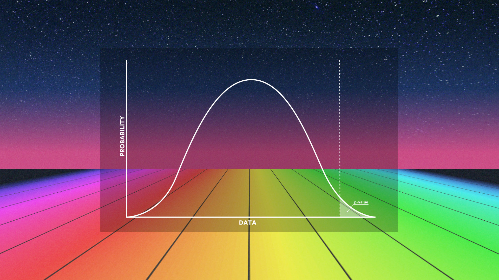

0.0001 0.001 0.01 0.1 0.08 0.09 0.15 0.21 0.35 0.55 0.3 0.64 0.77 0.9 0.03 0.02 0.09 0.19 0.21 0.41
Calculating pvalue for multiple comparisons in one-way ANOVA
محاسبه pvalue برای مقایسههای چند گانه در آنالیز واریانس یکطرفه
دادههای موجود و البته مخصوصا دادههای زیستی امروزه در مقیاس وسیعی تولید می شود. این امر جدا از آنکه منجر به ذخیره انبوهی از دادههای خام شده هست، بلکه باعث شکلگیری آزمونهای فرض مختلفی نیز بوده هست. برای آزمایش این فرضیهها، روشهایی از آمار استنباطی برروی مجموعه دادهها اِعمال میشود که منجر به بینشهای زیستی بیشتر(برای دادههای زیستی) و اصولا بینش عمیقتر در مورد دادهها میشود. اساسا، آزمون فرض یک روش آماری هست که احتمال موافق بودن دادهها را که براساس یک نمونهگیری تصادفی جمعآوری شدهاند، با فرض صفر (یا مخالف فرض صفر) محاسبه میکند و نتایج این محاسبات در یک عدد خاص با نماد pvalue خلاصه میشود. من پیرو قولی که در زمان ضبط ویدئوهای مربوط به BlueSky دادهام میخواهم درباره تصحیح مقادیر pvalue یک گزارش نسبتا مفصل ارائه بدم، ولی قبل از آنکه در مورد تصحیح pvalue برای مقایسههای چندگانه صحبت کنم، در مورد خود آن توضیح کوتاهی ارائه خواهم داد.
What is pvalue
pvalue چیست؟
هنگامی که میخواهید به صورت آماری استنباط کنید که آیا نتیجه آزمون آماری قابلتوجه (معنادار) هست یا خیر، با توجه به فرض صفر (H0) ، احتمال شکلگیری نتیجه مشاهده شده را با وضعیتی که در آن همه چیز کاملا تصادفی باشد البته با پذیرش درستی فرض صفر، مقایسه میکنیم. یک مقدار یا برشی که به عنوان مرز تصمیم گیری که البته هم براساس روابط تکنیکی ریاضی و هم تاریخی برروی آن یک اجماع نسبی وجود دارد (البته با توجه به زمینه و بستر مطالعه) که با عنوان خطای نوع اول یا α که معمولا برابر با مقادیر0.1, 0.05, 0.01, 0.001 میباشد، در نظر گرفته میشود. با توجه به نقطه برش یا خط مرزی درنظر گرفته شده، برای مثال اگر فرض صفر برابری میانگینهای چند گروه باشید، یعنی؛\[ \begin{cases}H_0:& \mu_1 = \mu_2 = \cdots = \mu_k\\ H_1: & \exists ~~ i, j ~~s.t~~ \mu_i \ne \mu_j, ~~ i, j = 1, 2, ..., k, \quad i \ne j\end{cases} \]
اگر مقدار pvalue بهدست آمده کمتر از نقطه برش انتخاب شده یا همان α باشد فرض صفر رد میشود و در غیر این صورت فرض صفر تأیید میشود. البته باید ذکر شود که در آزمونهای آماری صرف بیان کردن مقدار pvalue کفایت نمیکند. و باید علاوه بر این مقدار کمیتهایی مانند فواصل اطمینان، توان آزمون و یا اندازه اثر و ... میتواند در کنار مقدار pvalue گزارش شود.
pvalue Problems
مشکلات pvalue
حقیقت این هست که بحث جدل زیادی پیرامون موقعیت و اهمیت pvalue در محافل علمی وجود دارد. و این موضوع با ظهور کلاندادهها که عمدتا حول سوء تفاهم و همچنین استفاده نادرست از pvalue میشود افزونی یافته هست. اولین ایرادی که وارد میکنند این هست که نقاط برش انتخاب شده یعنی α = 0.1, 0.05, 0.001, ... کاملا دلخواه هستند و صرفا براساس یک قرارداد شکل گرفتهاند. و این واقعیت مولد آن هست که این مقدار لزوما برای هر زمینه مطالعاتی مناسب نیست و به عنوان مثال برای بعضی از کارآزماییهای بالینی حتی مقدار α = 0.001 پیشنهاد میشود. علاوه براین، دو تَوَرّش (سوگیری) رایج که به یکپارچگی یافتههای تحقیق اثر میگذارد، یکی گزارشهای انتخابی یا با عنوان انگلیسی Selective Reporting و دیگری با اصطلاح P-Hacking شناخته میشود، میباشد. بهطور خلاصه گزارش دهی انتخابی به گرایش به سمت گزارش کردن صرفا مقادیر معنادار یعنی زمانی که pvalue از مقدار نقطه برش کمتر هست توجه دارد، که در یک بررسی مشخص شد این اریبی به سمت نتایج معنادار گزارش شده میباشد. که در متاآنالیز با عنوان اریبی انتشار از آن یاد میشود. در مقابل، اصطلاح P-Hacking اشاره به نمونهگیریهای غیر تصادفی و یا دستکاری عمدی دادهها دارد.The problem of multiple comparisons
مسئله مقایسههای چندگانه
با فرض اینکه تمام ایرادات مطرح شده برطرف شده یا نادیده گرفته شوند، آخرین و اما مهمترین مسئلهای که در کمی سازی مقدار pvalue باقی میماند، زمانی هست که یک آزمون چندگانه روی میدهد، اما آزمون چندگانه چه مفهومی میتواند داشته باشد؟ وضعیتی را تصور کنید که میخواهیم تأثیر چند نوع کود را برروی میزان محصولات با هم مقایسه کنیم، که البته تعداد انواع کود بیشتر از ۲ هست و همچنین با فرض یکسان بودن سایر شرایط، مانند نوع خاک، وسعت زمین، نوع آبیاری و …و بخواهیم این مقایسهها را به صورت دوبهدو انجام دهیم، یعنی ابتدا کود نوع ۱ را با نوع ۲ و سپس با نوع ۳والی آخر یعنی به شکل زیر
\[
\begin{aligned}
& \text{Test}_1: ~ \begin{cases}H_0: & \mu_A = \mu_B\\ H_1: & \mu_A\ne \mu_B \end{cases}\\
& \text{Test}_2: ~ \begin{cases}H_0: & \mu_A = \mu_C\\ H_1: & \mu_A\ne \mu_B \end{cases}\\
& \text{Test}_3: ~ \begin{cases}H_0: & \mu_A = \mu_D\\ H_1: & \mu_A\ne \mu_B \end{cases}\\
& \text{Test}_4: ~ \begin{cases}H_0: & \mu_B = \mu_C\\ H_1: & \mu_A\ne \mu_B \end{cases}\\
& \text{Test}_5: ~ \begin{cases}H_0: & \mu_B = \mu_D\\ H_1: & \mu_A\ne \mu_B \end{cases}\\
& \text{Test}_6: ~ \begin{cases}H_0: & \mu_C = \mu_D\\ H_1: & \mu_A\ne \mu_B \end{cases}\\
\end{aligned}
\]
واضح هست که حروف A, B, C, D اشاره به نوع کودها دارد، همانطور که می بینیم وقتی انواع کود دارای ۴ سطح هست، ما ۶ مقایسه دو به دو خواهیم داشت که ترکیب ۲ از ۴ هست که جواب همان ۶ هست.
حالا اگر خطای نوع اول یا همان α = 0.05 در نظر بگیریم و برای هر ۶ مقایسه همزمان خطای نوع اول را پنج صدم در نظر بگیریم با وضعیت زیر مواجه خواهیم شد:
حالا اگر خطای نوع اول یا همان α = 0.05 در نظر بگیریم و برای هر ۶ مقایسه همزمان خطای نوع اول را پنج صدم در نظر بگیریم با وضعیت زیر مواجه خواهیم شد:
\[ \alpha_{Test_1} = \alpha_{Test_2} = \cdots = \alpha_{Test_6} = 0.05\to \]
خطای نوع اول یعنی امکان مشاهده وضعیتی که فرض H0 را رد کنیم در صورتی که این فرض درست باشد، پس احتمال اینکه فرض H0 را رد نکنیم در صورتی که این فرض درست باشد میشود 1 - α ولی این مقادیر برای یک آزمون صدق میکند، ولی اگه بخواهیم احتمال این را بسنجیم در صورتی برابری تمام میانگین سطوحها ما فرض H0 را برای هیچکدام از آزمونها رد نکنیم باید به این شکل آن را محاسبه کنیم
\[ \begin{aligned} & \alpha_{Single} = 0.05 \implies P_{single} = 1 - \alpha_{single} = 1 - 0.05 = 0.95\\ & \implies P_{multiple} = P_{single} ^ 6 = 0.7350919 \implies \\ & \alpha_{multiple} = 1 - P_{multiple} = 0.2649081 \end{aligned} \]
همانطور که مشاهده میکنیم، خطا نوع اول برای مقایسههای همزمان به شدت تورم پیدا کرده هست و اگر تعداد مقایسهها افزایش پیدا کند یعنی اگر ما فرضا ۵۰ تا مقایسه همزمان داشته باشیم و خطای نوع اول را را برای همه ۵۰ تا مقایسه پنجصدم در نظر بگیریم، آنگاه خطای نوع اول آزمونهای چندگانه با توجه به روابطی که بالا آوردیم میشود:
\[ \alpha_{multiple} = 1 - P_{multiple} = 1 - (1 - 0.05)^{50} = 0.923055 \]
واضح هست که در صورت افزایش مقایسههای چندگانه خطای نوع اول چندگانه به یک هم خواهد رسید.
سؤالی که اینجا شکل میگیرد این هست که چگونه باید جلوی رشد نرخ خطای نوع اول برای مقایسههای چندگانه گرفته شود؟
اولین جوابی که به این سؤال میشه داد، کاهش خطای نوع اول هست. یا در واقع کاهش Threshold یا آن آستانهای که در صورتی که pvalue از آن کمتر شود فرض اولیه رد میشود. یکی از روشهایی که برای پاسخ به این پرسش مد نظر قرار میگیرد، روش بونفرونی هست که در ادامه به بعضی از روشهای نسبتا پراستفاده تصحیح خطای نوع اول و یا مقدار pvalue اشاره خواهد شد.
قبل از آنکه به ادامه بحث بپردازیم، برای اینکه یک تصویر بهتر از توضیحاتی که قرار هست ارائه شود شکل گیرد، من روشهایی که میخواهم در این صفحه به آنها بپردازم را در پایین فهرست میکنم:
سؤالی که اینجا شکل میگیرد این هست که چگونه باید جلوی رشد نرخ خطای نوع اول برای مقایسههای چندگانه گرفته شود؟
اولین جوابی که به این سؤال میشه داد، کاهش خطای نوع اول هست. یا در واقع کاهش Threshold یا آن آستانهای که در صورتی که pvalue از آن کمتر شود فرض اولیه رد میشود. یکی از روشهایی که برای پاسخ به این پرسش مد نظر قرار میگیرد، روش بونفرونی هست که در ادامه به بعضی از روشهای نسبتا پراستفاده تصحیح خطای نوع اول و یا مقدار pvalue اشاره خواهد شد.
قبل از آنکه به ادامه بحث بپردازیم، برای اینکه یک تصویر بهتر از توضیحاتی که قرار هست ارائه شود شکل گیرد، من روشهایی که میخواهم در این صفحه به آنها بپردازم را در پایین فهرست میکنم:
- Bonferroni
- Holm
- Hochberg
- Hommel
- Benjumaini and Hochberg (BH)
- Benjumaini and Yekutieli (BY)
- False discovery rate (fdr)
Bonferroni’s method for correcting type 1 error in multiple tests
روش بونفرونی برای تصحیح خطای نوع اول در آزمونهای چندگانه
ما برای توضیح این ۷ نوع روش تصحیح pvalue یا خطای نوع اول، یک بردار از مقادیر pvalue محاسبه شده به روشهای معمولی را مد نظر قرار میدهیم، یعنی فرض میکنیم که یک آزمون چندگانه را پیادهسازی کردهایم و مقادیر محاسبه شده برای pvalue از قرار زیر بوده هست
روش بونفرونی رویکرد خیلی سادهای دارد، این روش به ما می گوید که اگر فرضا تعداد مقایسهها (آزمونها) فرضا mتا آزمون هست، آنگاه براساس خطای نوع اولی که در شروع تعیین میکنید، برای مقایسههای چندگانه این خطا را بر تعداد آزمونها که در اینجا فرض کردیم mتا میباشد تقسیم کنید و مقادیر pvalue محاسبه شده را با این خطا مقایسه کنید و آنگاه اگر مقدار pvalue کمتر از مقدار خطا نوع اول برآورد شده بود فرض H0 را رد کنید. یعنی؛
\[ \begin{aligned} & \text{Initial} ~\alpha = \alpha_0\implies \\ & \text{if number of test}~ = m \implies \text{final}~ \alpha = \alpha_{multiple} = \frac{\alpha_0}{m} \end{aligned} \]
حالا اگر بخواهیم برای مثالی که در بالا مقادیر pvalue آن را آوردهایم، این روش را پیادهسازی کنیم، به جواب زیر خواهیم رسید.
البته قبل از آنکه جواب را ببینیم، ذکر یک نکته در اینجا می تواند اهمیت داشته باشد، و آن این هست که، در
مثال:
البته قبل از آنکه جواب را ببینیم، ذکر یک نکته در اینجا می تواند اهمیت داشته باشد، و آن این هست که، در
R و در بسته stats که همراه R
برروی سیستم نصب میشود، یعنی جز بستههای پیشفرض هست، تابع p.adjust روشهای گفته شده در بالا را پشتیبانی میکند و ما میتوانیم با دادن بردار مقادیر pvalue به این تابع و تعیین نوع تصحیح خروجی که مقادیر اصلاح شده pvalue میباشد را داشته باشیم. ولی از نظر من در کتابخانه statsmodels در پایتون متدهایی هست که خروجی بهتری و همچنین روشهای به نسبت بیشتری را برای تصحیح خطای نوع اول و یا pvalue پشتیبانی میکنند. من خروجی در هر دو نرمافزار برای شما در پایین میآورم تا بهتر متوجه این مسئله بشوید.
مثال:
import statsmodels.stats.multitest as stest
pVal = [0.0001, 0.001, .01, 0.1, 0.08, 0.09, 0.15, 0.21, 0.35, 0.55, 0.3,
0.64, 0.77, 0.9, 0.03, 0.02, 0.09, 0.19, 0.21, 0.41]
res = stest.multipletests(pVal, alpha = 0.05, method = "bonferroni")
# python Result
print(res)(array([ True, True, False, False, False, False, False, False, False,
False, False, False, False, False, False, False, False, False,
False, False]), array([0.002, 0.02 , 0.2 , 1. , 1. , 1. , 1. , 1. , 1. ,
1. , 1. , 1. , 1. , 1. , 0.6 , 0.4 , 1. , 1. ,
1. , 1. ]), 0.0025613787765302876, 0.0025)# R Result
p.adjust(c(0.0001, 0.001, .01, 0.1, 0.08, 0.09, 0.15, 0.21, 0.35, 0.55, 0.3,
0.64, 0.77, 0.9, 0.03, 0.02, 0.09, 0.19, 0.21, 0.41), method = "bonferroni") [1] 0.002 0.020 0.200 1.000 1.000 1.000 1.000 1.000 1.000 1.000 1.000 1.000
[13] 1.000 1.000 0.600 0.400 1.000 1.000 1.000 1.000
همانطور که مشاهده میکنیم خروجی پایتون دارای جزئیات بیشتری هست، خروجی ایننرمافزار علاوه بر مقادیر اصلاح شده pvalue که اگر بخواهیم به شکل مشخصتری نشان دهیم؛
(array([ True, True, False, False, False, False, False, False, False, False, False, False, False, False, False, False, False, False, False, False]), array([0.002, 0.02 , 0.2 , 1. , 1. , 1. , 1. , 1. , 1. , 1. , 1. , 1. , 1. , 1. , 0.6 , 0.4 , 1. , 1. , 1. , 1. ]), 0.0025613787765302876, 0.0025)
خروجی پایتون یک تاپل می باشد که شامل ۴ عضو هست، عضو اول و دوم array میباشند و عضوهای سوم و چهارم مقادیر عددی، آرایه اول در حقیقت نتایج آزمونها را نشان میدهد که مقدار
True به معنای رد فرض اولیه هست و مقدار False به معنای پذیرش فرض اولیه یا همان H0. که در اینجا این آرایه با رنگ قرمز مشخص شده هست. آرایه دوم که با رنگ سبز مشخص شده هست اشاره دارد به مقادیر pvalue اصلاح شده توسط روش بهکار برده شده که در اینجا بونفرونی میباشد. و مقادیر عددی که عضوهای سوم و چهارم این تاپل میباشند و با رنگ آبی پررنگ مشخص شدهاند، عضو سوم اشاره به خطای نوع اول اصلاح شده با روش Sidak دارد. که برای اینکه بدانیم خطای نوع اول اصلاح شده Sidak چگونه محاسبه میشود، با توجه به مثال آورده شده در بالا، به معادله زیر توجه کنید:
\[ \begin{aligned} & \alpha_{Sidak} = 1 - (1 - \alpha_{Intiial})^{\frac{1}{\text{\# number of Tests}}} \implies \\ & \text{In This Example:}\quad \alpha_{Sidak} = 1 - (1 - 0.05)^{\frac{1}{20}} = 0.0025614 \end{aligned} \]
که البته در اینجا کمی این مقدار گرد شده هست. و همچنین
عضو چهارم همان خطای نوع اول اصلاح شده به روش بونفرونی میباشد.
ولی در خروجی
R همانطور که ملاحظه میکنیم فقط مقادیر اصلاح شده pvalue را ما در خروجی میبینیم. باز هم ذکر یک نکته حائز اهمیت هست، چرا وقتی ما در روش بونفرونی حرف از اصلاح خطای نوع اول زدهایم در این دو تابع مقادیر اصلاح شده برای pvalue برای ما در خروجی ظاهر شده هست. دلیل این امر این هست که هر دو این توابع یا متدها، به جای آنکه در حقیقت مقایسه pvalue را با مقدار تقسیم خطای نوع اول بر تعداد آزمونها مقایسه کنند، به جای آن تعداد آزمونها را در مقدار pvalue ضرب میکنند و آن گاه مقدار pvalue بهدست آمده را با همان خطای نوع اول آغازین آزمون مقایسه میکنند. ولی در خروجی نهایی پایتون ما خطای نوع اول اصلاح شده نهایی هم در انتها میبینیم ولی در خروجی R این چنین نیست. البته باز هم شاید این ابهام شکل بگیرد که ضرب تعداد آزمونها در بعضی از مقادیر pvalue مقادیر گزارش شده در خروجیهای بالا نیست، برای این مورد باید ذکر شود که مقدار pvalue یک مقدار احتمال هست پس نمیتواند بزرگتر از ۱ گزارش شود و برای وقتی که ضرب تعداد آزمونها در pvalue برآورد شده اولیه بزرگتر از ۱ باشد، آن مقدار همان ۱ گزارش میشود.
Holm’s method for correcting type 1 error in multiple tests
روش هولم برای تصحیح خطای نوع اول در آزمونهای چندگانه
این روش در حقیقت یک اصلاح هست برروی روش بونفرونی که از مراحل زیر تشکیل شده هست.- فرض کنید که m آزمون همزمان دارید و مقادیر برآورد شده برای pvalue این آزمونها را از کوچک به بزرگ به شکل زیر مرتب کردهاید: P1, P2, , ..., Pm و این مقادیر متناظر با فرضهای اولیه H1, H2, , ..., Hm میباشد برای به دست آوردن نتیجه هر آزمون البته با تصحیح خطای نوع اول به شکل زیر عمل میکنیم
- اگر P1 < α⁄m آنگاه فرض اولیه H1 را رد کن و برو گام بعدی، در غیر این صورت فرض اولیه H1 را قبول کن و از ادامه مراحل صرفنظر کن
- اگر P2 < α⁄(m-1) آنگاه فرض اولیه H2 را رد کنید و بروید گام بعدی، در غیر این صورت فرض اولیه H2 را قبول کنید و از ادامه مراحل صرفنظر کنید
- این روند ادامه پیدا میکند به این شکل که برای هر مقدار Pk, k = 1, 2, ..., m اگر Pk < α⁄(m - k + 1) آنگاه فرض اولیه Hk را رد کنید و بروید مرحله بعد در غیر این صورت از ادامه مراحل صرفنظر کنید.
مثال:
import statsmodels.stats.multitest as stest
pVal = [0.0001, 0.001, .01, 0.1, 0.08, 0.09, 0.15, 0.21, 0.35, 0.55, 0.3,
0.64, 0.77, 0.9, 0.03, 0.02, 0.09, 0.19, 0.21, 0.41]
res = stest.multipletests(pVal, alpha = 0.05, method = "holm")
# python Result
print(res)(array([ True, True, False, False, False, False, False, False, False,
False, False, False, False, False, False, False, False, False,
False, False]), array([0.002, 0.019, 0.18 , 1. , 1. , 1. , 1. , 1. , 1. ,
1. , 1. , 1. , 1. , 1. , 0.48 , 0.34 , 1. , 1. ,
1. , 1. ]), 0.0025613787765302876, 0.0025)# R Result
p.adjust(c(0.0001, 0.001, .01, 0.1, 0.08, 0.09, 0.15, 0.21, 0.35, 0.55, 0.3,
0.64, 0.77, 0.9, 0.03, 0.02, 0.09, 0.19, 0.21, 0.41), method = "holm") [1] 0.002 0.019 0.180 1.000 1.000 1.000 1.000 1.000 1.000 1.000 1.000 1.000
[13] 1.000 1.000 0.480 0.340 1.000 1.000 1.000 1.000Hochberg’s method for correcting type 1 error in multiple tests
روش هاچبرگ برای تصحیح خطای نوع اول در آزمونهای چندگانه
روش هاچبرگ دقیقا مانند روش هولم هست، با این تفاوت که مقایسهها از بزرگترین مقدار pvalue برآورد شده شروع میشود و تا کوچکترین مقدار امتداد پیدا میکند یا به عبارتی دیگر عکس مسیری که روش هولم در پیش میگرفت، روش هولم مقایسهها را از کوچکترین مقدار pvalue برآورد شده شروع میکرد ولی در روش هاچبرگ از بزرگترین مقدار شروع میشود و با اولین مقایسه معنادار (رد فرض صفر)، ادامه الگوریتم متوقف میشود و تمام مقایسههای (آزمونهای) باقیمانده، معنادار گزارش میشود.البته یک تفاوت دیگر هم بین این روش و روش هولم وجود دارد و آن تعیین مقدار pvalue در هر مرحله هست، روشهای ذکر شده همگی تصحیح را را بر روی مقادیر خطای نوع اول انجام میدهند ولی همانطور که ذکر شده بهجای مقایسه pvalue هر مرحله با خطای نوع اول آن مرحله، ضریب اِعمال شده در خطای نوع اول هر مرحله را معکوس کرده و در مقدار pvalue همان مرحله ضرب میکنند و اسم این مقدار pvalue را مقدار اصلاح شده pvalue مینامند ولی همانطور که در گفتار بالا گفته شد، pvalue یک مقدار احتمال هست و نمیتواند بزرگتر از ۱ باشد لذا مقداری که انتخاب میشود مقدار کمینه بین ۱ و مقدار حاصل شده هست. تفاوت روش هاچبرگ با روش هولم در اینجاست که روشهای بونفرونی و هولم مقدار pvalue حاصل شده را با یک مقایسه کرده و مقدار کمینه را در خروجی میآورند ولی روش هاچبرگ مقدار حاصلشده را با بیشینه مقدار pvalue محاسبه شده با مقادیر pvalue محاسبه شده در همه مقایسههای شکل گرفته مقابسه کرده و مقدار مینیم را انتخاب کرده و در خروجی میآورد. یعنی در مثال ما چون مقدار بیشینه 0.9 میباشد لذا آنجا که pvalue حاصل شده بیشتر از این مقدار باشد، همین مقدار 0.9 به عنوان مقدار نهایی برای pvalue آن مرحله در خروجی خواهد آمد.
مثال:
import statsmodels.stats.multitest as stest
pVal = [0.0001, 0.001, .01, 0.1, 0.08, 0.09, 0.15, 0.21, 0.35, 0.55, 0.3,
0.64, 0.77, 0.9, 0.03, 0.02, 0.09, 0.19, 0.21, 0.41]
res = stest.multipletests(pVal, alpha = 0.05, method = "simes-hochberg")
# python Result
print(res)(array([ True, True, False, False, False, False, False, False, False,
False, False, False, False, False, False, False, False, False,
False, False]), array([0.002, 0.019, 0.18 , 0.9 , 0.9 , 0.9 , 0.9 , 0.9 , 0.9 ,
0.9 , 0.9 , 0.9 , 0.9 , 0.9 , 0.48 , 0.34 , 0.9 , 0.9 ,
0.9 , 0.9 ]), 0.0025613787765302876, 0.0025)# R Result
p.adjust(c(0.0001, 0.001, .01, 0.1, 0.08, 0.09, 0.15, 0.21, 0.35, 0.55, 0.3,
0.64, 0.77, 0.9, 0.03, 0.02, 0.09, 0.19, 0.21, 0.41), method = "hochberg") [1] 0.002 0.019 0.180 0.900 0.900 0.900 0.900 0.900 0.900 0.900 0.900 0.900
[13] 0.900 0.900 0.480 0.340 0.900 0.900 0.900 0.900Hommel’s method for correcting type 1 error in multiple tests
روش هومِل برای تصحیح خطای نوع اول در آزمونهای چندگانه
این روش، نسبتا روش پیچیدهای هست البته در مقایسه با روشهای قبلی.فرض کنیم؛
\[ \text{H} = \left\{H_{(1)}, H_{(2)}, ..., H_{(m)}\right\}, \]
فرضهای صفر متناظر با آزمونهای چندگانه با مقادیر pvalue برآورد شده به شرح زیر باشد؛
مقادیر مرتب شده هست.
\[ p_{(1)}, p_{(2)}, ..., p_{(m)} \]
که در اینجا m تعداد مقایسههای چندگانه هست. آنگاه برای بررسی معناداری آزمون Hi به روش زیر عمل میکنیم.
ابتدا مقدار j که به فرم زیر هست را محاسبه میکنیم
ابتدا مقدار j که به فرم زیر هست را محاسبه میکنیم
\[ j = \max\left\{i \in \left\{1, ..., m\right\}:\quad p_{(m -i+k)} > \frac{k\alpha}{i},\quad\text{for}~~k = 1, ..., i\right\} \]
واضح هست که اگر به ازای یک مقدار دلخواه i هیچ مقداری برای j حاصل نشود آنگاه تمام فرضهای صفری که در بالا آورده شد رد میشود. حالا فرض کنیم که ما برای یک مقدار i یک مقدار j بهدست آوردهایم آنگاه برای اینکه معناداری Hi را بررسی کنیم باید این مقایسه را شکل دهیم؛
\[ p_i \geq \frac{\alpha}{j} \]
اگر گزاره شرطی بالا برقرار باشد، آنگاه فرض صفر Hi را میپذیریم.
مثال:
مثال:
import statsmodels.stats.multitest as stest
pVal = [0.0001, 0.001, .01, 0.1, 0.08, 0.09, 0.15, 0.21, 0.35, 0.55, 0.3,
0.64, 0.77, 0.9, 0.03, 0.02, 0.09, 0.19, 0.21, 0.41]
res = stest.multipletests(pVal, alpha = 0.05, method = "hommel")
# python Result
print(res)(array([ True, True, False, False, False, False, False, False, False,
False, False, False, False, False, False, False, False, False,
False, False]), array([0.002, 0.019, 0.18 , 0.8 , 0.72 , 0.738, 0.9 , 0.9 , 0.9 ,
0.9 , 0.9 , 0.9 , 0.9 , 0.9 , 0.42 , 0.32 , 0.738, 0.9 ,
0.9 , 0.9 ]), 0.0025613787765302876, 0.0025)# R Result
p.adjust(c(0.0001, 0.001, .01, 0.1, 0.08, 0.09, 0.15, 0.21, 0.35, 0.55, 0.3,
0.64, 0.77, 0.9, 0.03, 0.02, 0.09, 0.19, 0.21, 0.41), method = "hommel") [1] 0.002 0.019 0.180 0.800 0.720 0.738 0.900 0.900 0.900 0.900 0.900 0.900
[13] 0.900 0.900 0.420 0.320 0.738 0.900 0.900 0.900Benjamini-Hochberg Method (BH) for correcting type 1 error in multiple tests
روش بنجامینی-هاچبرگ برای تصحیح خطای نوع اول در آزمونهای چندگانه
این روش به نسبت روش قبل سادهتر هست، ولی تفاوتی که این روش و روشهایی که در ادامه میآید با روشهایی که ذکر شد در این هست که، روشهای ذکر شده در جهت کنترل خطای نوع اول کل مقایسه یا همان (FWER) کارکرد خودشان را پیادهسازی میکردند. ولی این روش و روشهایی که در ادامه میآید، فارغ از اینکه خطای نوع اول در ابتدا چه مقداری هست در جهت کنترل رد به اشتباه فرض صفر عمل میکنند. یا به عبارتی کنترل FDR (False Discovery Rate) که نسبت FDR اشاره دارد به تعداد فرضهای صفر به اشتباه رد شده بر کل فرضهای صفر رد شده. از این بستر اولین روشی که معرفی میشود روش بنجامینی-هاچبرگ هست که مقدار pvalue تصحیح شده با استفاده از این شیوه از طریق زیر حاصل میشود.در ابتدا مقادیر pvalue برآورد شده را از کوچک به بزرگ مرتب میکنیم و در مجموعه زیر قرار میدهیم
\[ \left\{p_{(1)}, p_{(2)}, ..., p_{(m)}\right\} \]
که مقدار m اشاره به تعداد کل آزمونهای چندگانه دارد. آنگاه مقدار pvalue حاصل شده برای عضو ith این مجموعه با معادله زیر به دست میآید
\[ p_{(i)}^{(BH)} = \min\left\{\underset{j \geq i}{\min}\left\{\frac{m \times p_{(j)}}{j}\right\}, ~1\right\} \]
مثال:
import statsmodels.stats.multitest as stest
pVal = [0.0001, 0.001, .01, 0.1, 0.08, 0.09, 0.15, 0.21, 0.35, 0.55, 0.3,
0.64, 0.77, 0.9, 0.03, 0.02, 0.09, 0.19, 0.21, 0.41]
res = stest.multipletests(pVal, alpha = 0.05, method = "fdr_bh")
# python Result
print(res)(array([ True, True, False, False, False, False, False, False, False,
False, False, False, False, False, False, False, False, False,
False, False]), array([0.002 , 0.01 , 0.06666667, 0.22222222, 0.22222222,
0.22222222, 0.3 , 0.32307692, 0.46666667, 0.64705882,
0.42857143, 0.71111111, 0.81052632, 0.9 , 0.12 ,
0.1 , 0.22222222, 0.32307692, 0.32307692, 0.5125 ]), 0.0025613787765302876, 0.0025)# R Result
p.adjust(c(0.0001, 0.001, .01, 0.1, 0.08, 0.09, 0.15, 0.21, 0.35, 0.55, 0.3,
0.64, 0.77, 0.9, 0.03, 0.02, 0.09, 0.19, 0.21, 0.41), method = "BH") [1] 0.00200000 0.01000000 0.06666667 0.22222222 0.22222222 0.22222222
[7] 0.30000000 0.32307692 0.46666667 0.64705882 0.42857143 0.71111111
[13] 0.81052632 0.90000000 0.12000000 0.10000000 0.22222222 0.32307692
[19] 0.32307692 0.51250000Benjumaini and Yekutieli Method (BY) for correcting type 1 error in multiple tests
روش بنجامینی-یِکوتیلی برای تصحیح خطای نوع اول در آزمونهای چندگانه
این روش در سال ۲۰۰۱ معرفی شد، مانند روش قبل ولی محافظهکارانهتر. همچنین به مانند روش قبل در جهت کنترل FDR میباشد. روش محاسبهی pvalue اصلاح شده با این شیوه به فرم زیر هست، در ابتدا اگر فرض کنیم؛\[ \text{H} = \left\{H_{(1)}, H_{(2)}, ..., H_{(m)}\right\}, \]
فرضهای صفر متناظر با آزمونهای چندگانه با مقادیر pvalue برآورد شده به شرح زیر باشد؛
مقادیر مرتب شده هست.
\[ p_{(1)}, p_{(2)}, ..., p_{(m)} \]
آنگاه
\[ k = \max\left\{i:\quad p_{(i)} \leq \frac{i}{m}\tilde{\alpha}\right\}, \quad \tilde{\alpha} = \frac{\alpha_{(Initial)}}{\sum_{i = 1}^m \frac{1}{i}} \]
منظور از αInitial همان خطای نوع اولی هست که در ابتدا آزمون به آن اشاره میشود. و در معادله بالا اگر مقداری برای k به دست نیاید تمام فرضهای اولیه پذیرفته میشوند. و اگر مقدار برای k به دست بیاید، فرض های
\[ \left\{H_1, \dots, H_k\right\} \]
رد می شود، همانطور که مشاهده می کنیم این روش به نسبت دارای محاسبات کمتری و همچنین محافظهکارانهتر از روش قبلی میباشد.
import statsmodels.stats.multitest as stest
pVal = [0.0001, 0.001, .01, 0.1, 0.08, 0.09, 0.15, 0.21, 0.35, 0.55, 0.3,
0.64, 0.77, 0.9, 0.03, 0.02, 0.09, 0.19, 0.21, 0.41]
res = stest.multipletests(pVal, alpha = 0.05, method = "fdr_by")
# python Result
print(res)(array([ True, True, False, False, False, False, False, False, False,
False, False, False, False, False, False, False, False, False,
False, False]), array([0.00719548, 0.0359774 , 0.23984931, 0.7994977 , 0.7994977 ,
0.7994977 , 1. , 1. , 1. , 1. ,
1. , 1. , 1. , 1. , 0.43172876,
0.35977397, 0.7994977 , 1. , 1. , 1. ]), 0.0025613787765302876, 0.0025)# R Result
p.adjust(c(0.0001, 0.001, .01, 0.1, 0.08, 0.09, 0.15, 0.21, 0.35, 0.55, 0.3,
0.64, 0.77, 0.9, 0.03, 0.02, 0.09, 0.19, 0.21, 0.41), method = "BY") [1] 0.007195479 0.035977397 0.239849310 0.799497702 0.799497702 0.799497702
[7] 1.000000000 1.000000000 1.000000000 1.000000000 1.000000000 1.000000000
[13] 1.000000000 1.000000000 0.431728759 0.359773966 0.799497702 1.000000000
[19] 1.000000000 1.000000000False Discovery Rate (FDR) Method for correcting type 1 error in multiple tests
روش FDR برای تصحیح خطای نوع اول در آزمونهای چندگانه
دو روش آخری که در بالا ذکر شد، یک زیرمجموعه از مجموعه روشهای تصحیح خطا نوع اول با رویکرد اصطلاحا FDR میباشد که در بالا یک اشاره کوتاه به آن شد، اگر بخواهیم به شکل خیلی سادهترین مجموعه روشهای FDR را بیان کنیم که البته زیرمجموعههای آن قطعا دارای تفاوتهایی هستند، میتوانیم به این شکل بیان کنیم؛ فرض کنیم مقادیر pvalue بهدست آمده از آزمونها که از کوچک به بزرگ مرتب شدهاند به صورت زیر هستند\[ P_{value}: ~~\left\{p_{(1)}, p_{(2)}, \dots, p_{(m)}\right\} \]
اگر مانند قبل فرضهای صفر متناظر با مقادیر pvalue ذکر شده در بالا، عبارت باشد از
\[ \text{H} = \left\{H_{(1)}, H_{(2)}, ..., H_{(m)}\right\}, \]
برای برآورد pvalue اصلاح شده به شکل زیر عمل میکنیم؛
\[ p_{(i)}^{(FDR)} = \frac{m}{i} \times p_{(i)} \implies \text{if}~~~ p_{(i)}^{(FDR)} \leq \alpha_{Initial} ~~ \text{Reject}~H_i \]
که در اینجا مقدار m اشاره به تعداد مقایسههای چندگانهای هست که میخواهیم انجام دهیم.
مثال:
مثال:
import statsmodels.stats.multitest as stest
pVal = [0.0001, 0.001, .01, 0.1, 0.08, 0.09, 0.15, 0.21, 0.35, 0.55, 0.3,
0.64, 0.77, 0.9, 0.03, 0.02, 0.09, 0.19, 0.21, 0.41]
res = stest.fdrcorrection(pVal, alpha = 0.05, method = "indep")
# python Result
print(res)(array([ True, True, False, False, False, False, False, False, False,
False, False, False, False, False, False, False, False, False,
False, False]), array([0.002 , 0.01 , 0.06666667, 0.22222222, 0.22222222,
0.22222222, 0.3 , 0.32307692, 0.46666667, 0.64705882,
0.42857143, 0.71111111, 0.81052632, 0.9 , 0.12 ,
0.1 , 0.22222222, 0.32307692, 0.32307692, 0.5125 ]))# R Result
p.adjust(c(0.0001, 0.001, .01, 0.1, 0.08, 0.09, 0.15, 0.21, 0.35, 0.55, 0.3,
0.64, 0.77, 0.9, 0.03, 0.02, 0.09, 0.19, 0.21, 0.41), method = "fdr") [1] 0.00200000 0.01000000 0.06666667 0.22222222 0.22222222 0.22222222
[7] 0.30000000 0.32307692 0.46666667 0.64705882 0.42857143 0.71111111
[13] 0.81052632 0.90000000 0.12000000 0.10000000 0.22222222 0.32307692
[19] 0.32307692 0.51250000
متد
statsmodels.stats.multitest.fdrcorrection
در حقیقت یک ابزار دیگر پایتون برای پیادهسازی همان دو روش قبلی
همانطور که میبینیم خروجی روش
(BH, BY) هست؛ این تابع
برای آرگومان method پنجتا مقدار می تواند بگیرد که نتایج به دست آمده براساس هر کدام از مقادیر ذکر شده در راهنمای این تابع، یا نتایج روش BH را دارد یا نتایج روش BY .همانطور که میبینیم خروجی روش
fdr در R نتیجه پیادهسازی روش BH را دارد، در حقیقت وجود fdr به عنوان یک آرگومان ضرورتی ندارد. البته برای روشهای مستقر شده برروی مفهوم FDR تیبشیرانی نیز روشهایی مبتنی بر BH, BY ارائه داده هست که از طریق بسته statsmodels قابل دسترس هستند. برای جزئیات آرگومانهای تابع ذکر شده در statsmodels میتوانید به این لینک مراجعه کنید.
PostHoc Tests With Adjusted Pvalue
پیادهسازی آزمونهای تعقیبی با مقادیر اصلاح شده pvalue
در اینجا با استفاده از یک مجموعه داده ساده یعنی همان دادههایIris پیادهسازی متدهای ذکر شده را نشان خواهیم داد برای دسترسی به دادههای
iris در پایتون من از بسته reticulate استفاده میکنم، البته دادههای iris در پایتون موجود هست هم در بسته scikit-learn و هم در کتابخانه statsmodels ولی من برای این گزارش این روش را انتخاب کردهام.
## for use iris data in python
library(reticulate)
pathh <- Sys.which("python") |>
gsub("\\", "//", x = _, fixed = TRUE)
use_python(pathh)## use python
import statsmodels.formula.api as sfa
import scikit_posthocs as sp
dat = r.iris.copy()
dat.columns = dat.columns.str.replace(".", "")<string>:1: FutureWarning: The default value of regex will change from True to False in a future version. In addition, single character regular expressions will *not* be treated as literal strings when regex=True.print(dat.head(10)) SepalLength SepalWidth PetalLength PetalWidth Species
0 5.1 3.5 1.4 0.2 setosa
1 4.9 3.0 1.4 0.2 setosa
2 4.7 3.2 1.3 0.2 setosa
3 4.6 3.1 1.5 0.2 setosa
4 5.0 3.6 1.4 0.2 setosa
5 5.4 3.9 1.7 0.4 setosa
6 4.6 3.4 1.4 0.3 setosa
7 5.0 3.4 1.5 0.2 setosa
8 4.4 2.9 1.4 0.2 setosa
9 4.9 3.1 1.5 0.1 setosa## pairwise comparison use ttest
sp.posthoc_ttest(dat, val_col = 'SepalWidth', group_col = 'Species',
p_adjust = "bonferroni").round(4) setosa versicolor virginica
setosa 1.0 0.0000 0.0000
versicolor 0.0 1.0000 0.0055
virginica 0.0 0.0055 1.0000"""p_adjust:
bonferroni : one-step correction
sidak : one-step correction
holm-sidak : step down method using Sidak adjustments
holm : step-down method using Bonferroni adjustments
simes-hochberg : step-up method (independent)
hommel : closed method based on Simes tests (non-negative)
fdr_bh : Benjamini/Hochberg (non-negative)
fdr_by : Benjamini/Yekutieli (negative)
fdr_tsbh : two stage fdr correction (non-negative)
fdr_tsbky : two stage fdr correction (non-negative)
"""'p_adjust: \n bonferroni : one-step correction\n\n sidak : one-step correction\n\n holm-sidak : step down method using Sidak adjustments\n\n holm : step-down method using Bonferroni adjustments\n\n simes-hochberg : step-up method (independent)\n\n hommel : closed method based on Simes tests (non-negative)\n\n fdr_bh : Benjamini/Hochberg (non-negative)\n\n fdr_by : Benjamini/Yekutieli (negative)\n\n fdr_tsbh : two stage fdr correction (non-negative)\n\n fdr_tsbky : two stage fdr correction (non-negative)\n'## NonParametric pairwise test----
sp.posthoc_mannwhitney(a = dat, val_col = 'SepalWidth', group_col = "Species",
p_adjust = "fdr_by").round(4) setosa versicolor virginica
setosa 1.0 0.0000 0.0000
versicolor 0.0 1.0000 0.0084
virginica 0.0 0.0084 1.0000## R: pairwise Ttest
pairwise.t.test(x = iris$Sepal.Width, g = iris$Species,
p.adjust.method = "bonferroni", pool.sd = F) |>
_$p.value |>
round(4) setosa versicolor
versicolor 0 NA
virginica 0 0.0055## R: pairwise wilcoxon test
pairwise.wilcox.test(x = iris$Sepal.Width, g = iris$Species,
p.adjust.method = "BY") |>
_$p.value |>
round(4) setosa versicolor
versicolor 0 NA
virginica 0 0.0084
واضح هست که نتایج گزارش شده در هر دو پلتفرم
(R, python) یکسان هست.
References
منابع
- Hsu JC. Multiple comparisons: theory and methods. London: Chapman & Hall: CRC Press, 1996. [Google Scholar]
- Bender R, Lange S. Adjusting for multiple testing—when and how? J Clin Epidemiol 2001;54:343-9. 10.1016/S0895-4356(00)00314-0 [Google Scholar]
- Thiese MS, Ronna B, Ott U. P value interpretations and considerations. J Thorac Dis 2016;8:E928-E931. 10.21037/jtd.2016.08.16 [Google Scholar]
- Farcomeni A. A review of modern multiple hypothesis testing, with particular attention to the false discovery proportion. Stat Methods Med Res 2008;17:347-88. 10.1177/0962280206079046 [Google Scholar]
- Bland JM, Altman DG. Multiple significance tests: the Bonferroni method. BMJ 1995;310:170. 10.1136/bmj.310.6973.170 [Google Scholar]
- Holm M. A simple sequentially rejective multiple test procedure. Scand J Statist 1979;6:65-70. [Google Scholar]
- Hochberg Y. A sharper Bonferroni procedure for multiple tests of significance. Biometrika 1988;75:800-2. 10.1093/biomet/75.4.800 [Google Scholar]
- Simes RJ. An improved Bonferroni procedure for multiple tests of significance. Biometrika 1986;73:751-4. 10.1093/biomet/73.3.751 [Google Scholar]
- Hommel G. A stagewise rejective multiple test procedure based on a modified Bonferroni test. Biometrika 1988;75:383-6. 10.1093/biomet/75.2.383 [Google Scholar]
- Benjamini Y, Hochberg Y. Controlling the false discovery rate: a practical and powerful approach to multiple testing. J R Stat Soc Series B Stat Methodol 1995;57:289-300. [Google Scholar]
- Benjamini Y, Yekutieli D. The control of the false discovery rate in multiple testing under dependency. Ann Stat 2001;29:1165-88. [Google Scholar]